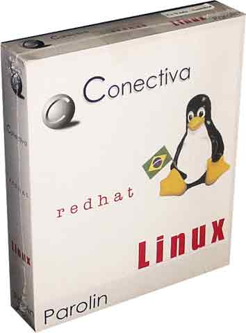
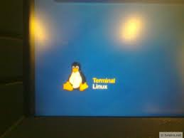

Software Livre No Brasil(){
Software Livre
O Início
Há mais ou menos 22 anos, consolidava-se "abrasileirado" o termo Free Software, traduzido para Software Livre em português. A chegada e os primeiros usos de sistemas baseados no GNU/Linux se deram em departamentos de Ciência da Computação nas universidades de tecnologia de ponta do país, dentre elas o Instituto de Matemática e Estatística da Universidade de São Paulo (IME-USP) cujo curso de Computação já existia desde a década de 70.
O pioneiro na instalação de um GNU/Linux na USP foi o professor Marco Dimas Gubitoso (Gubi), provavelmente o primeiro das universidades brasileiras também. Mais tarde, foi o primeiro brasileiro a se cadastrar no Linux Counter, projeto que visa contabilizar o número de usuários de sistemas Linux no mundo. Gubi após sua experiência com o Softlanding Linux System, uma das primeiras distribuições que utilizava o kernel linux e também precursora do Slackware, divulgou no departamento em que trabalhava a sua satisfação ao utilizá-lo e acabou por influenciar outros grandes professores da USP, dentre eles o professor Imre Simon.
O professor Imre Simon passou a ser um grande divulgador do Software Livre no Brasil, com a idéia de compartilhamento e produção de conhecimento democrático. Realizou palestras, cursos na área e também focou bastante em direito autoral, patente e desenvolvimento de conteúdo livre.
Conectiva, Software Livre no mercado brasileiro
Conectiva foi uma empresa paranaense de soluções em Software Livre. Foi a primeira a comercializar serviços para distribuições Linux no Brasil e em toda América Latina. Teve um grande reconhecimento pelo desenvolvimento de ferramentas e produtos voltados para o mercado, incluindo uma série de livros, manuais, softwares como o Linux Tool e suporte técnico especializado.

CRHL Parolin 1.0 [Com Ciência]
A conectiva desenvolveu uma série de implementações sobre Sistemas Operacionais baseados em linux, como uma versão do famoso Red Hat, que deu início a distribuição pelo Brasil, o Conectiva Red Hat Linux Parolin 1.0.
O sucesso de vendas das distribuições Parolin, foi o que permitiu o crescimento e a fama da empresa, mais funcionários e estagiários foram contratados. Trabalhos como suporte a grande quantidade de servidores Linux instalados pelo Brasil foram passados dos sócios fundadores para os demais novos funcionários.
Após 10 anos de mercado, a empresa Conectiva se juntou com a empresa francesa MandrakeSoft, que distribuia a versão Linux Mandrake. Com a junção das duas empresas o nome passou a ser Mandriva, que distribui o Linux Mandriva e soluções de informática no mundo todo.
Importância no Atual Contexto Brasileiro
A operação de migração de sistemas baseados em softwares proprietários para softwares livres foi iniciada no ano de 2003, durante o governo Lula. Neste mesmo ano foi instituido o Comitê de Implementação do Software Livre (CISL), que teve como foco principal sensibilizar a sociedade sobre os benefícios do Software Livre, elaborar e difundir documentação normativa e recomendações para que órgãos públicos passassem a utilizá-lo como solução tecnológica. Graças a essa medida o Brasil de hoje já possui muitos casos de sucessos na área de Software Livre como o Banco do Brasil, Exército Brasileiro, Conab, Serpro, Dataprev, Ministério do Desenvolvimento Agrário, Caixa, Ministério da Educação e entre outros mais.

Terminais com Linux [tvieira.net]
A medida de integração do software livre foi um marco para a tecnologia brasileira. O país tem um grande histórico de adoções de soluções pagas, muitas delas de muito alto custo e baixa produtividade para o fim proposto. O Banco do Brasil em um dos seus esclarecimentos sobre o processo de implantação de soluções livres afirma, que os impasses para que a mesma ocorresse foram poucas, a instalação e o uso dos Sistemas Operacionais baseados em GNU/Linux provaram ser mais eficientes que as antigas versões de Windows ou OS/2 que rodavam nos caixas eletrônicos.
A liberdade para o contexto tecnológico atual, fazendo uma analogia ao Brasil Colônia, representa para o país o estímulo a soluções totalmente Brasileiras e não mais uma dependência das empresas internacionais que desde os primórdios influenciam e movimentam o lucro delas mesmas. O país tem agora a possibilidade de suprir a fraquesa das indústrias nacionais de informática, que são desde o início dos anos 90 destruídas pelos extrangeiros, e possibilitar uma abertura para que desenvolvedores e a cultura livre se propaguem por todos os estados do país.
A vantagem deste processo pode ser ilustrado com o caso de sucesso do próprio Banco do Brasil(BB). Desde 2003 adota os Sistemas Operacionais de seus terminais como Linux e os seus softwares de escritório, antes MS-Office da Microsoft, como BrOffice. Segundo uma notícia em 2010 via twitter do próprio banco "A economia estimada em licenças com o uso de software livre por parte do BB, que adota essa solução desde 2003, já ultrapassa R$ 100 milhões".
Software Livre: Brasil e Liberdade!
}